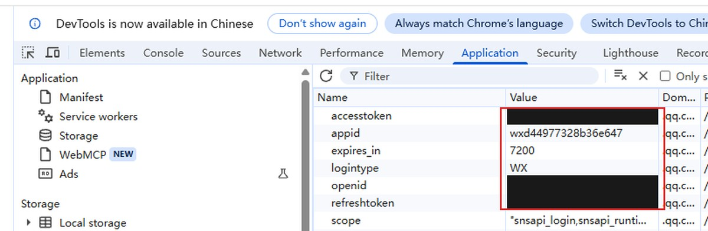
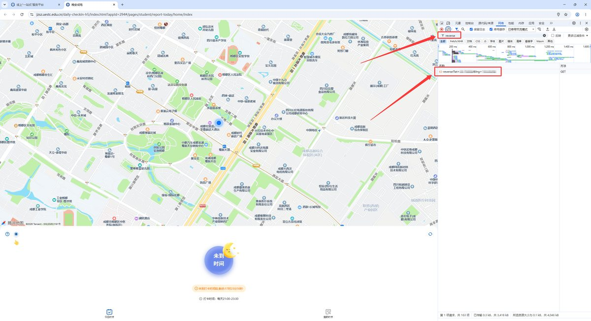
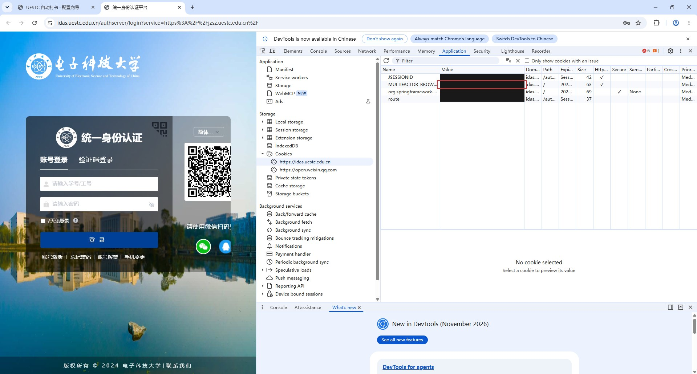

填写下面的信息，生成两个 GitHub Secret 的值。全部在浏览器本地处理， 不上传任何数据。
先点下面的按钮打开授权页，用你本人的微信扫码确认。
static.pc.yyb.qq.comopenid、accesstoken、refreshtoken，
双击 Value 复制，填到下面。
static.pc.yyb.qq.com，
不是 idas.uestc.edu.cn（那个下面是指纹，第 4 步才用）。

static.pc.yyb.qq.com → 右侧列表里红框中的三行就是需要的：
accesstoken、openid、refreshtoken
（图里的值已打码）。
static.pc.yyb.qq.com，
不是 idas.uestc.edu.cn——那个下面是指纹，第 4 步才用。
从浏览器 Cookie 里复制出来的三项。
必须在宿舍现场取。围栏半径约 150 米，站在宿舍里取的值才可靠。

reverse → 点开那条 reverse?lat=…&lng=… 请求，
在 URL 里读 lat 和 lng。
打卡平台登录用。
https://idas.uestc.edu.cn →
找 MULTIFACTOR_BROWSER_FINGERPRINT。
它是 HttpOnly，document.cookie 看不到。

idas.uestc.edu.cn → 在列表中找到
MULTIFACTOR_BROWSER_FINGERPRINT（红框处），右侧 Value 就是指纹。
点击生成后，把两段内容分别添加到 GitHub 仓库的 Secrets。
所有计算都在你的浏览器里完成，页面不联网、不上传。
截图取自 UESTC-MoonCheck（MIT），其中的 Cookie 值已打码。